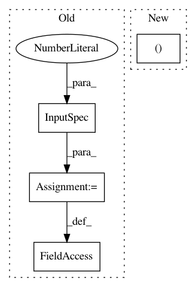

72e326dde38cb731424210bfd6e56f301ddc9e2b,keras/layers/convolutional.py,ZeroPadding1D,__init__,#ZeroPadding1D#Any#,2065
Before Change
def __init__(self, padding=1, **kwargs):
super(ZeroPadding1D, self).__init__(**kwargs)
self.padding = conv_utils.normalize_tuple(padding, 2, "padding")
self.input_spec = InputSpec(ndim=3)
def compute_output_shape(self, input_shape):
if input_shape[1] is not None:
length = input_shape[1] + self.padding[0] + self.padding[1]
After Change
def __init__(self, padding=1, **kwargs):
normalized_padding = (conv_utils.normalize_tuple(padding, 2, "padding"),)
super(ZeroPadding1D, self).__init__(normalized_padding,
"channels_last",
**kwargs)
In pattern: SUPERPATTERN
Frequency: 4
Non-data size: 4
Instances
Project Name: keras-team/keras
Commit Name: 72e326dde38cb731424210bfd6e56f301ddc9e2b
Time: 2018-08-28
Author: gabrieldemarmiesse@gmail.com
File Name: keras/layers/convolutional.py
Class Name: ZeroPadding1D
Method Name: __init__
Project Name: tensorflow/agents
Commit Name: 45d6fdb023623ddc0cb66994293a51a8e8ade2ae
Time: 2020-04-09
Author: johnangusmcleod@gmail.com
File Name: tf_agents/networks/bias_layer.py
Class Name: BiasLayer
Method Name: build
Project Name: keras-team/keras
Commit Name: 23c40e68de2cffa77c92ae48cca1f81913756d2a
Time: 2018-08-21
Author: gabrieldemarmiesse@gmail.com
File Name: keras/layers/convolutional.py
Class Name: Cropping1D
Method Name: __init__
Project Name: tensorflow/agents
Commit Name: cf51c81221fa9dcb087c8dfe48e313c71bd3dd83
Time: 2020-05-20
Author: johnangusmcleod@gmail.com
File Name: tf_agents/keras_layers/bias_layer.py
Class Name: BiasLayer
Method Name: build